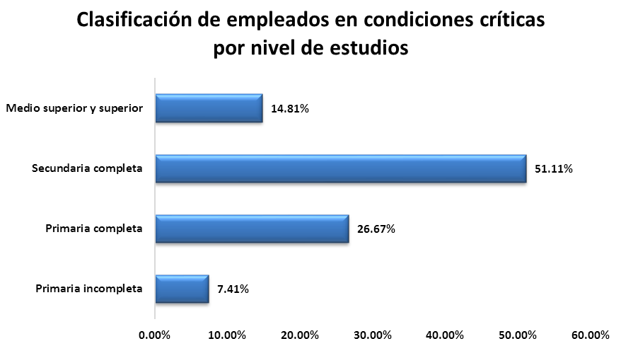
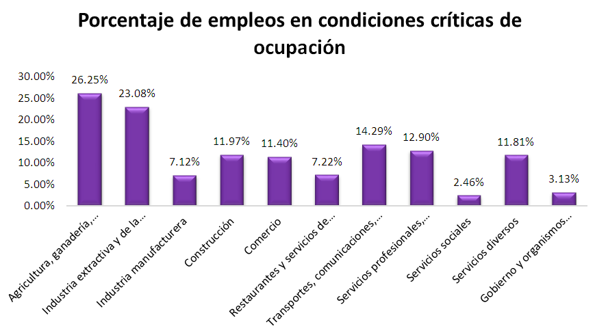
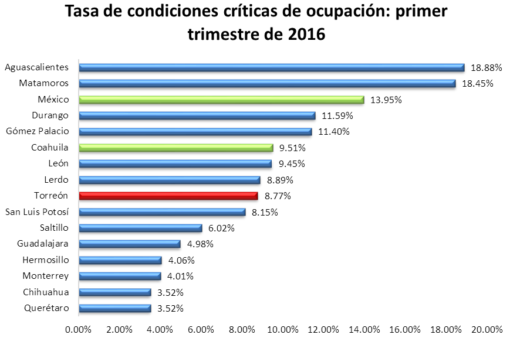

De acuerdo a la Encuesta Nacional de Ocupación y Empleo (ENOE) de INEGI, 10.5% del personal ocupado en la Zona Metropolitana de La Laguna labora en condiciones críticas de ocupación. En otras palabras, aproximadamente 50,094 laguneros tienen una relación inadecuada entre la duración de las jornadas laborales y la remuneración que perciben.
En esta situación crítica se encuentra únicamente el personal que cumpla con alguno de los siguientes criterios: 1) trabajar menos de 35 horas a la semana por razones ajenas a su decisión, 2) trabajar 35 horas o más y recibir una remuneración de hasta un salario mínimo y 3) trabajar más de 48 horas a la semana y percibir ingresos de entre uno y dos salarios mínimos.
En los últimos dos años, la Tasa de Condiciones Críticas de Ocupación (TCCO) de La Laguna casi se duplicó, pasando de 5.9 a 10.5%, mientras a nivel estatal y nacional el incremento fue de 2 puntos porcentuales en el mismo periodo. Sin embargo Torreón, además de ubicarse debajo de la tasa metropolitana, con 8% de los ocupados en condiciones críticas, está por debajo de las tasas estatal y nacional de 9.5 y 13.9% respectivamente.
A nivel nacional, esta problemática se presenta en mayor medida en zonas rurales, con una tasa que dobla a la de las zonas más urbanizadas: 20% del personal ocupado en zonas rurales se encuentra en condiciones críticas, cuando en las zonas urbanas es el 10%.
En el caso de La Laguna, la mayor TCCO se encuentra en el sector primario, pues la agricultura, ganadería, silvicultura, caza y pesca, tienen una tasa de 26.25%. En contraste, la cifra en la industria manufacturera es de 7.12%. El dato es congruente al comparar a los municipios de La Laguna con municipios más industrializados como Monterrey, Guadalajara y Querétaro, donde la tasa de condiciones críticas es de entre 3 y 5%.
Otra característica relacionada a las condiciones de ocupación es la escolaridad. En el caso de La Laguna, las personas que con mayor frecuencia se enfrentan a esta problemática son, entre otros, aquellos con menor escolaridad.
Al primer trimestre de 2016, 85% del personal lagunero en condiciones críticas de ocupación no contaba con estudios de nivel medio superior (preparatoria), y 34% de ellos sólo cuenta con educación primaria. No obstante, la población con educación superior no está exenta, pues 15% del personal en condiciones críticas terminó los estudios superiores.
Los jóvenes también sufren de malas condiciones laborales, 17% de los laguneros en condiciones laborales críticas se encuentran en el rango de 14 a 24 años de edad. Sin embargo, la mayor cantidad de empleados en esta situación son los de 25 a 44 años, pues representan 44% del total.
Los datos anteriores muestran que el problema no se trata simplemente de la falta de empleos de calidad, sino también de la falta de educación y capacitación de la mano de obra, pues la gran mayoría de los trabajadores que se enfrentan a las malas condiciones laborales tienen una educación trunca y/o laboran en actividades económicas primarias con poco valor agregado.
Es por esto que las políticas diseñadas para combatir las condiciones críticas de ocupación no deben centrarse únicamente en la creación de empleos, también en la capacitación y especialización de la mano de obra y en mejorar la calidad de la educación, así como en facilitar el acceso y la permanencia en ésta. Asimismo debe ser prioritario mejorar el nivel de ingresos de los empleados.
Las inadecuadas prácticas en el mercado laboral le restan productividad a las empresas y competitividad a las ciudades y por si fuera poco, trabajar largas jornadas por una remuneración mínima les quita a los trabajadores el fin último de las sociedades, que es la calidad de vida.
Gráficas



Fuente
- Encuesta Nacional de Ocupaciòn y Empleo, primer trimestre de 2016.
Una versión de divulgación de este análisis apareció en Milenio Laguna
Torreón: tasa de ocupación crítica menor a la media nacional